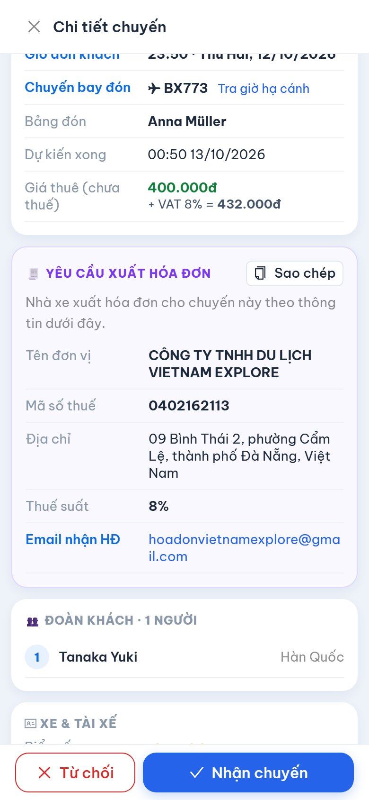

Nhận chuyến · Điều xe · Cập nhật trạng thái · Theo dõi công nợ
Địa chỉ truy cập https://nhaxe.vietnamexplore.vn Dùng trên điện thoại hoặc máy tính, không cần cài đặt
CÔNG TY TNHH DU LỊCH VIETNAM EXPLORE
09 Bình Thái 2, phường Cẩm Lệ, thành phố Đà Nẵng · Hotline điều hành: +84 941 533 737
Phiên bản tháng 10/2026
Ảnh minh họa chụp từ phần mềm với dữ liệu mẫu (tên khách, lái xe, nhà xe, số điện thoại là giả).
Mục lục
Giới thiệu
Đăng nhập và tài khoản
Màn hình chính
Nhận chuyến hoặc từ chối chuyến
Xem chi tiết chuyến
Thực hiện chuyến: cập nhật trạng thái
Hoàn thành chuyến và khai báo phát sinh
Xuất hóa đơn cho công ty
Công nợ và thanh toán
Thông báo
Quy định khi phục vụ khách
Câu hỏi thường gặp
1. Giới thiệu
Cổng nhà xe đối tác là trang web để nhà xe làm việc trực tiếp với văn phòng điều hành Vietnam Explore:
Nhận các chuyến xe công ty giao, xem đầy đủ lộ trình, giờ đón, chuyến bay, thông tin liên hệ đoàn khách.
Báo xe và tài xế sẽ chạy, gửi lệnh điều xe cho tài xế qua Zalo chỉ bằng một nút bấm.
Cập nhật tiến độ chuyến để văn phòng theo dõi, khai báo chi phí phát sinh.
Xem tiền chuyến, số đã được thanh toán và số còn lại.
Nhà xe chỉ thấy các chuyến được giao cho mình. Giá bán cho khách và thông tin hợp đồng với khách không hiển thị trên cổng này.
2. Đăng nhập và tài khoản
2.1. Nhận tài khoản
Văn phòng điều hành cấp cho nhà xe tên đăng nhập và mật khẩu ban đầu. Một nhà xe có thể có nhiều tài khoản (chủ xe, người điều xe…), tất cả cùng thấy các chuyến của nhà xe.
2.2. Đăng nhập
Mở trình duyệt (Chrome, Safari, Cốc Cốc…) và vào https://nhaxe.vietnamexplore.vn
Nhập tên đăng nhập, mật khẩu rồi bấm Đăng nhập.
Màn hình Cổng nhà xe đối tác hiện ra với tên nhà xe ở góc trên bên trái.
2.3. Đổi mật khẩu (nên làm ngay lần đầu)
Bấm vào vòng tròn chữ cái ở góc trên bên phải → Đổi mật khẩu → nhập mật khẩu cũ và mật khẩu mới.
2.4. Đưa ra màn hình chính điện thoại
Để mở nhanh như một ứng dụng:
Android (Chrome): bấm dấu ⋮ → Thêm vào màn hình chính.
iPhone (Safari): bấm nút Chia sẻ (hình vuông có mũi tên) → Thêm vào MH chính.
Bảo mật: không chia sẻ mật khẩu cho người ngoài. Nhân viên nghỉ việc hoặc mất điện thoại → báo ngay văn phòng để khóa tài khoản. Dùng xong trên máy tính dùng chung thì bấm Đăng xuất.
3. Màn hình chính
Hình: Màn hình chính – thẻ Chờ nhận
Màn hình chính có 4 thẻ:
Thẻ
Nội dung
Chờ nhận
Chuyến văn phòng vừa giao, nhà xe cần nhận hoặc từ chối. Số trong ngoặc là số chuyến đang chờ.
Đang chạy
Chuyến đã nhận, chưa hoàn thành.
Đã xong
Chuyến hoàn thành hoặc đã hủy trong 60 ngày gần nhất.
Công nợ
Tiền chuyến, số đã thanh toán, số còn lại.
Các chuyến được nhóm theo ngày đón (Hôm nay, Ngày mai, …). Mỗi thẻ chuyến cho biết: giờ đón, loại dịch vụ, mã booking, điểm đón (chấm xanh) → điểm trả (chấm đỏ), số khách, loại xe, chuyến bay, yêu cầu xuất hóa đơn, biển số và tài xế đã báo.
Danh sách tự cập nhật mỗi phút; bấm Tải lại để cập nhật ngay.
Bấm vào thẻ chuyến để mở chi tiết.
4. Nhận chuyến hoặc từ chối chuyến
Khi văn phòng giao chuyến, nhà xe nhận thông báo (biểu tượng 🔔) và chuyến nằm ở thẻ Chờ nhận với nhãn Chờ nhận.
4.1. Nhận chuyến
Mở chi tiết chuyến, kiểm tra giờ đón, lộ trình, loại xe, giá thuê.
Bấm ✓ Nhận chuyến ở cuối màn hình.
Nhập Biển số xe, Tên tài xế, SĐT tài xế nếu đã sắp xếp (có thể nhập sau) → bấm Nhận chuyến.
Chuyến chuyển sang thẻ Đang chạy với nhãn Đã nhận chuyến; văn phòng được báo ngay.
4.2. Từ chối chuyến
Nếu không có xe phù hợp: bấm ✕ Từ chối, nhập lý do (bắt buộc, ví dụ "hết xe 16 chỗ ngày này") → Từ chối. Văn phòng sẽ điều xe khác.
Lưu ý: Hãy nhận hoặc từ chối càng sớm càng tốt để văn phòng kịp sắp xếp. Chỉ từ chối được chuyến chưa nhận. Chuyến đã nhận mà không chạy được → gọi ngay văn phòng điều hành.
5. Xem chi tiết chuyến
Hình: Chi tiết chuyến
5.1. Thanh thao tác nhanh
Nút
Công dụng
🪧 Bảng đón
Hiện bảng tên đón khách toàn màn hình (tự xoay ngang cho chữ to). Có nút In khổ A4 ngang. Nếu khách gửi mẫu bảng đón riêng, bảng đón dùng file đó.
📄 Hợp đồng
Hợp đồng vận chuyển điện tử của chuyến – tài xế xuất trình khi lực lượng chức năng kiểm tra.
📍 Chỉ đường
Mở Google Maps chỉ đường tới điểm đón.
📞 Gọi đoàn
Gọi người liên hệ của đoàn (hướng dẫn viên / trưởng đoàn).
📋 Lệnh điều xe
Sao chép toàn bộ thông tin chuyến thành tin nhắn – dán vào Zalo gửi tài xế. Dùng được sau khi đã nhận chuyến.
5.2. Các phần thông tin
Lộ trình: điểm đón, lịch trình (nếu có), điểm trả, mỗi điểm có nút chỉ đường.
Liên hệ đón khách: tên, vai trò, số điện thoại; nút Gọi và Nhắn qua Zalo / WhatsApp / KakaoTalk / WeChat / LINE tùy ứng dụng khách dùng.
Thông tin chuyến: số khách, loại xe, giờ đón, chuyến bay đón / tiễn (bấm Tra giờ hạ cánh để xem giờ bay thực tế), tên trên bảng đón, giờ dự kiến xong, giá thuê, ghi chú chuyến và 📌 ghi chú điều xe của văn phòng.
Yêu cầu xuất hóa đơn (nếu có) – xem mục 8.
Đoàn khách: họ tên, giới tính, quốc tịch từng khách.
Xe & tài xế: biển số, tài xế đã báo; bấm Sửa để đổi xe / tài xế.

Hình: Phần dưới chi tiết chuyến: giá thuê, yêu cầu xuất hóa đơn, đoàn kháchHình: Thẻ Công nợ: chọn kỳ, tiền chuyến, đã thanh toán, còn lại
Mẹo: Đón khách sân bay luôn bấm Tra giờ hạ cánh trước khi xuất phát – chuyến bay trễ hay sớm thì chủ động điều chỉnh giờ ra đón.
6. Thực hiện chuyến: cập nhật trạng thái
Trong khi chạy, nhà xe (hoặc người điều xe) bấm nút lớn ở cuối màn hình chi tiết để báo tiến độ. Văn phòng thấy ngay trạng thái mới.
Chờ nhận
Nhận chuyến →
Đã nhận chuyến
Bắt đầu đi đón →
Đang đến đón
Đã đón khách →
Đang chở khách
Hoàn thành chuyến →
Hoàn thành
Bấm nút
Khi nào
Ghi chú
BẮT ĐẦU ĐI ĐÓN
Xe xuất phát đi đón khách
Bắt buộc đã nhập biển số và tên tài xế, nếu chưa có hệ thống sẽ nhắc nhập.
ĐÃ ĐÓN KHÁCH
Khách đã lên xe
HOÀN THÀNH CHUYẾN
Trả khách xong
Hiện bảng khai báo phát sinh (mục 7).
Mỗi bước hệ thống hỏi xác nhận để tránh bấm nhầm. Nếu báo "Trạng thái chuyến đã thay đổi, vui lòng tải lại" → bấm Tải lại rồi thao tác lại.
Văn phòng đổi hoặc hủy chuyến: nhà xe nhận thông báo "Chuyến … thay đổi", "Chuyến … đã hủy" hoặc "Chuyến … đã được chuyển" (không còn giao cho nhà xe). Luôn mở lại chi tiết chuyến để xem thông tin mới nhất và báo lại cho tài xế.
7. Hoàn thành chuyến và khai báo phát sinh
Khi bấm HOÀN THÀNH CHUYẾN, bảng Hoàn thành chuyến hiện ra:
Không có phát sinh: bấm Không có phát sinh, hoàn thành.
Có phát sinh (thêm giờ, thêm điểm, cầu đường, … hoặc giảm giá):
Nhập Phát sinh tăng và/hoặc Phát sinh giảm – số tiền trước thuế.
Nhập Lý do phát sinh (bắt buộc), ví dụ "khách yêu cầu thêm 2 giờ, đi thêm điểm Hội An".
Kiểm tra bảng tính tự động: Giá thuê + tăng − giảm = thành tiền chưa thuế (+ thuế GTGT nếu chuyến có xuất hóa đơn) = Tổng.
Bấm Lưu phát sinh & hoàn thành.
Phát sinh cần văn phòng duyệt mới được tính vào công nợ. Trạng thái duyệt hiện cạnh số tiền phát sinh:
Nhãn
Ý nghĩa
Chờ duyệt
Văn phòng chưa duyệt – chưa tính vào công nợ.
Đã duyệt
Đã tính vào tiền chuyến (văn phòng có thể điều chỉnh số tiền, kèm ghi chú).
Không duyệt
Không được chấp nhận – xem ghi chú lý do của văn phòng.
Nếu văn phòng điều chỉnh giá thuê của chuyến, chi tiết chuyến hiện dòng "⚠ Văn phòng điều chỉnh giá" kèm lý do.
8. Xuất hóa đơn cho công ty
Chuyến có nhãn 🧾 Xuất HĐ là chuyến công ty yêu cầu nhà xe xuất hóa đơn GTGT. Trong chi tiết chuyến có phần Yêu cầu xuất hóa đơn gồm: tên đơn vị, mã số thuế, địa chỉ, thuế suất, email nhận hóa đơn và ghi chú.
Bấm Sao chép để chép toàn bộ thông tin (kèm giá chưa thuế và mã chuyến) rồi dán vào phần mềm hóa đơn điện tử của nhà xe. Hóa đơn gửi về đúng email ghi trong phần này.
Với chuyến có xuất hóa đơn, giá thuê hiển thị là giá chưa thuế, kèm dòng "+ VAT …% = tổng gồm thuế".
9. Công nợ và thanh toán
Thẻ Công nợ cho biết tình hình tiền giữa nhà xe và công ty:
Tiền chuyến (số chuyến): tổng tiền các chuyến đã chạy, gồm phát sinh đã duyệt; nếu có hóa đơn thì ghi rõ phần chưa thuế + thuế.
Đã được thanh toán: tổng số tiền công ty đã chuyển.
Còn lại: số công ty còn phải trả nhà xe.
Bên dưới là hai bảng:
Các lần thanh toán: ngày, số tiền, hình thức (chuyển khoản / tiền mặt), số chứng từ hoặc ghi chú.
Chuyến tính tiền: từng chuyến với ngày đón, mã booking, hành trình, xe, trạng thái, phát sinh, tiền chưa thuế, thuế, thành tiền và dòng tổng.
Đối chiếu công nợ: trước khi đề nghị thanh toán, xem bảng Chuyến tính tiền để đối chiếu. Thấy sai lệch (thiếu chuyến, sai giá, phát sinh chưa duyệt) → liên hệ văn phòng kèm mã booking.
10. Thông báo
Biểu tượng 🔔 ở góc trên hiện số thông báo chưa đọc. Bấm vào thông báo để mở thẳng chuyến liên quan. Các thông báo nhà xe nhận:
Thông báo
Việc cần làm
Có chuyến mới được giao
Mở chuyến → nhận hoặc từ chối.
Chuyến … thay đổi
Xem nội dung thay đổi (giờ, điểm đón, số khách…) và báo tài xế; nên gửi lại Lệnh điều xe.
Chuyến … đã hủy
Báo tài xế không chạy chuyến đó.
Chuyến … đã được chuyển
Chuyến không còn giao cho nhà xe – báo tài xế hủy lịch.
Nên mở cổng nhà xe nhiều lần trong ngày (hoặc để sẵn trên màn hình chính điện thoại) để không bỏ sót chuyến mới và thay đổi.
11. Quy định khi phục vụ khách
Tài xế có mặt tại điểm đón trước giờ đón; đón sân bay theo dõi giờ hạ cánh thực tế.
Xe đúng loại, sạch sẽ; tài xế trang phục lịch sự, không sử dụng rượu bia, tuân thủ luật giao thông.
Mang theo / mở được hợp đồng vận chuyển (nút Hợp đồng) để xuất trình khi kiểm tra.
Dùng Bảng đón đúng tên khách khi đón tại sân bay, ga, khách sạn.
Bảo mật thông tin khách: danh sách khách, số điện thoại chỉ dùng để phục vụ chuyến; không chia sẻ, không liên hệ khách vào mục đích khác.
Mọi thay đổi do khách yêu cầu trên đường (thêm điểm, thêm giờ…) cần báo văn phòng và khai báo phát sinh khi hoàn thành chuyến.
Sự cố (xe hỏng, tai nạn, khách vắng mặt, trễ chuyến bay kéo dài…) → gọi ngay hotline điều hành.
12. Câu hỏi thường gặp
Câu hỏi
Trả lời
Quên mật khẩu?
Liên hệ văn phòng để được cấp lại mật khẩu mới, sau đó đổi mật khẩu.
Không thấy chuyến văn phòng nói đã giao?
Bấm Tải lại; kiểm tra đúng thẻ (Chờ nhận / Đang chạy). Vẫn không có → chuyến có thể đã chuyển, hãy hỏi văn phòng.
Không bấm được "Bắt đầu đi đón"?
Chưa nhập biển số hoặc tên tài xế. Vào phần Xe & tài xế → Sửa.
Đổi xe / tài xế sau khi đã nhận?
Phần Xe & tài xế → Sửa, lưu lại; văn phòng được báo tự động. Gửi lại lệnh điều xe cho tài xế mới.
Muốn trả lại chuyến đã nhận?
Không tự từ chối được – gọi văn phòng điều hành.
Bấm nhầm trạng thái?
Báo văn phòng để chỉnh lại.
Khai báo sai phát sinh?
Báo văn phòng trước khi phát sinh được duyệt.
Liên hệ văn phòng điều hành – CÔNG TY TNHH DU LỊCH VIETNAM EXPLORE
Hotline điều hành: +84 941 533 737 · Điện thoại: +84 972 090 501 · Email: md@vietnamexplore.vn
Địa chỉ: 09 Bình Thái 2, phường Cẩm Lệ, thành phố Đà Nẵng · Cổng nhà xe: https://nhaxe.vietnamexplore.vn